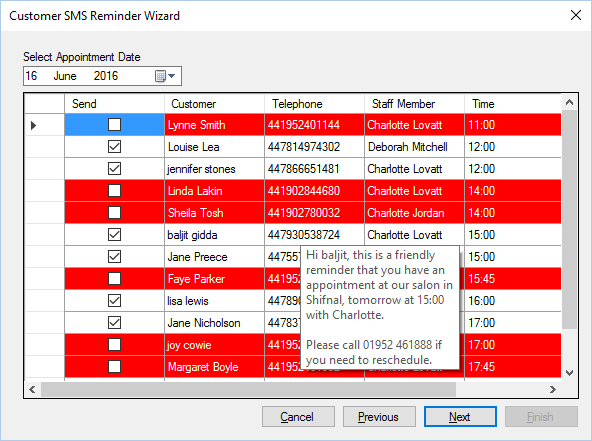

Step 2 allows staff to select which customers will receive the message.
Reminders can only be sent to mobile phones, within the UK all mobile phone’s start with 07,
more importantly the UK country code is 0044 (or sometimes shown as +44). This format must
be used when validating telephone messages to be sent.
When sending to an international number, the first 0 is removed, so, the telephone number below
07473812282
When formatted for sending via the alert wizard will be changed to
447473812282
If a message cannot be sent to the customer then it will be highlighted in red, the telephone
number can be edited at this point by clicking the telephone number.

When you hover over a customer it will show the message formatted, this is what the customer
will receive.
Only customers with a tick (ü) in the Send column will receive messages.